Obsah
Klasicismus
Osvícenství
+ Preromantismus
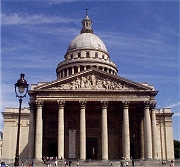
Pařížský Pantheon
|
VĚK ROZUMU
V 17. století se centrum nových uměleckých i myšlenkových proudů přesouvá z Itálie do Francie. Zatímco v ostatních zemích vládne baroko, ve Francii se prosazuje klasicismus. Tento výraz je odvozený od latinského slova classis – vzorný, prvotřídní. O sto let později se klasicismus rozšiřuje i do dalších zemí, především do Spojených států amerických. Pro odlišení bývá tato druhá vlna označována jako neoklasicismus. Za vlády Napoleona se prosazuje empír [ampír] – sloh, jehož název je odvozen z francouzského výrazu pro císařství (empire). Vedle klasicismu se v 18. století rozvíjí osvícenství (racionalismus) a na jeho konci také preromantismus. V průběhu 19. století tyto směry vystřídal romantismus.
|
Historie
V 17. stol. se v Evropě prosazuje absolutismus. Roku 1776 vyhlásilo 13 severoamerických kolonií nezávislost na Velké Británii. Spojené státy americké se staly prvním moderním demokratickým státem. Velká francouzská revoluce (1789-1794) skončila jakobínskou diktaturou a nástupem Napoleona (1799). Zároveň Evropu zachvátily napoleonské války (1799-1815) .
|
Absolutismus
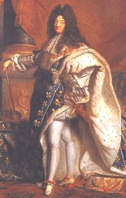
|
Absolutismus
Absolutismus je způsob vlády, který se postupně prosadil ve většině evropských zemí. Moc se soustřeďuje v rukou panovníka a centrálních úřadů. Velký vliv na chod země měli královi oblíbenci a rádci. Nejlépe vystihuje absolutismus výrok francouzského krále Ludvíka XIV. „Stát jsem já!“.
Osvícenský absolutismus se prosadil v Prusku – Fridrich II. Veliký (1740-1786), Rusku – Kateřina II. Veliká (1762-1796) a především v Rakousku. Moc zůstala v rukou panovníka, který se proměnil v pilného reformátora. Řadu prospěšných reforem vyhlásila císařovna Marie Terezie (1740-1780) a její syn Josef II. (1780-1790) – povinná školní docházka, zrušení nevolnictví, toleranční patent (náboženská svoboda), katastrální a daňová reforma, sekularizace církevních majetků. Jiná nařízení byla ovšem velmi pochybná – zákaz jezuitského řádu, používání pytlů místo rakví, aby se ušetřilo...
|
Absolutismus
Francouzští absolutističtí panovníci Ludvík XIII. (1601-1643), Ludvík XIV. (1643-1715), Ludvík XV. (1715-1774), Ludvík XVI. (1774-1792, popraven 1793) vládli velmi dlouho, což přispělo k větší stabilitě země a rozvoji věd i umění. Velký vliv na rozhodování měli kardinálové Mazarin a Richelieu.
|
Osvícenství a racionalismus
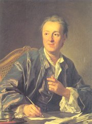
Denis Diderot
|
Osvícenství a racionalismus
Francouzský filozof René Descartes [dekart], latinsky Cartesius, (1596-1650) chtěl oddělit vědu od teologie. Za nejlepší prostředek poznávání považoval rozum (ratio). Jeho racionalismus se odráží ve slavném výroku Cogito ergo sum! (Myslím, tedy jsem!).
Vědu podporovali i panovníci. Ludvík XIII. ustavil v roce 1635 Francouzskou akademii, nejstarší vědeckou společnost, která se zabývala literární kritikou a tvorbou slovníku francouzského jazyka. Obdobné prestižní instituce začaly vznikat i v dalších zemích.
Osvícenci chtěli šířit osvětu a kladli velký důraz na vzdělávání obyvatelstva. Psali populárně naučné spisy o zemědělství, řemeslech i různých vědeckých oborech. Dosažené poznatky měla shrnout francouzská Encyklopedie aneb Racionální slovník věd, umění a řemesel, projekt Denise Diderota a d’Alemberta, do kterého napsali některá hesla Voltaire a Rousseau.
|
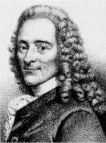
Voltaire
|
Volnomyšlenkářství
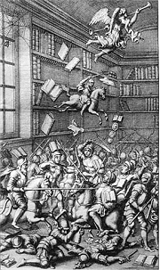
Swift: Souboj knih
|
Volnomyšlenkářství
Snaha vymanit se z moci církve dala vzniknout různým volnomyšlenkářským hnutím. Jansenismus bylo náboženské a filozofické hnutí ve Francii, které vycházelo z myšlenek teologa Cornelia Jansena (1585-1638). Ten ve svém spise Augustinus tvrdil, že konání dobra umožňuje pouze „boží milost“, a podle odpůrců z řad jezuitů snižoval církevní i světské autority. K jansenismu se hlásil Pascal nebo Racine. Libertinismus hlásal nevázanost a naprostou volnost názorů i mravů. Měl k němu blízko francouzský spisovatel Cyrano de Bergerac [sirano de beržerak] (1619-1655), autor utopických spisů Cesta na Měsíc a Cesta do Sluneční říše, italský dobrodruh Giacomo Casanova (1725-1798), autor Pamětí, nebo podivínský markýz de Sade [sad] (1740-1814). Choderlos de Laclos (1741-1803) popsal morální zkaženost libertinů v románu Nebezpečné známosti. Někteří učenci se hlásí k deismu (bůh svět pouze stvořil, nyní do jeho chodu nezasahuje), nebo dokonce k ateismu (bůh není). Rozmach volnomyšlenkářských hnutí nastal během Velké francouzské revoluce.
|
Tajné společnosti
Na počátku 17. století vyšly manifesty tajemného bratrstva Růžového kříže – rozenkruciánů a kniha Chymická svatba Christiana Rosencreutze. V 18. začali angličtí intelektuálové zakládat tajné lóže svobodných zednářů. (V Čechách vznikla první lóže v roce 1742.) Skrytě působilo také společenství iluminátů.
|
Výtvarné umění
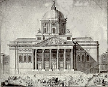
Pařížský Pantheon
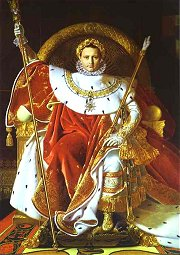
Ingres: Napoleon Bonaparte
|
Architektura, malířství, sochařství
Klasicisté se vracejí k antice mnohem důsledněji než umělci renesance. Zvláště patrné to je v architektuře. Některé stavby jako by přímo kopírovaly antické chrámy (trojúhelníkový štít, korintské sloupy...). Monumentální architektonické projekty se vyznačují ideálními proporcemi. Stavby mají většinou světský charakter. Snaha o geometrickou čistotu ovlivnila hlavně zahradní architekturu. Tzv. francouzský park poznáte podle pečlivě sestříhaných stromů a keřů do tvaru koule, kuželu, případně labyrintu, jak je tomu v zahradách zámku Versailles u Paříže. Atmosféru klasicistního parku dotvářejí volně rozmístěné sochy, fontány a místa k odpočinku. Klasicistní sochaře ovlivnily vykopávky v Pompejích (1748). Také malíři zpracovávali hlavně antické náměty nebo malovali portréty svých chlebodárců.
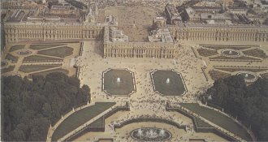
Už v době rokoka se začal klást velký důraz na jednotný styl užitého umění. Typický vzhled výbavy interiérů se nazývá podle francouzských panovníků Ludvík XIV., XV. a XVI.
|
Výtvarné umění
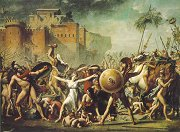
David: Únos Sabinek
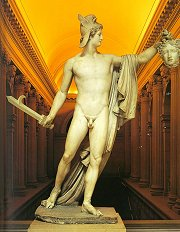
Koho představuje tato Canovova socha?
|
Hudba
|
Hudba
V hudbě se klasicismus prosadil až v letech 1730-1830. K raně klasicistním skladatelům patří „Božský Čech“ Josef Mysliveček (1737-1781) nebo příslušníci manheimské školy. Vrcholu dosahuje v dílech rakouských skladatelů Josepha Haydna (1732-1809) a Wolfganga Amadea Mozarta (1756-1791), autora oper Don Giovanni nebo Figarova svatba.
|
Které skladby uvedených autorů znáš?
Co má společného Mozart s Prahou?
Co mají společného Beaumarchais [bómaršé] a Mozart?
|
Literatura
|
Literatura
Literatura 17. a 18. století je značně různorodá. Většinou se dělí na klasicistní, osvícenskou a preromantickou. Klasicisté rozlišovali vysoké (óda, epos, tragédie) a nízké (bajka, satira, komedie) literární žánry.
Osvícenci píší filozofické a didaktické romány.
Preromantici se více zajímají o lidovou slovesnost, přírodu a city (sentimentalismus). Centrem kultury se staly šlechtické a měšťanské salóny, kde se umělci scházeli se společenskou smetánkou.
|
|
Divadlo
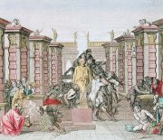
Dekorace ke klasicistní hře
|
Divadlo
Základním klasicistním požadavkem na tvorbu dramatiků bylo zachování zákona trojí jednoty (místa, času a děje). Od něj se odvíjela výprava (jediná divadelní dekorace). Oproti postavám komedie dell’arte působili herci strnule, protože se soustředili hlavně na deklamaci veršovaných textů. Až do Velké francouzské revoluce byli herci považováni za společenskou spodinu. Přestože mezi lidmi byly oblíbené hlavně komedie, teoretikové klasicismu považovali za mnohem hodnotnější žánr tragédii. Klasicistní tragédie psali Francouzi Racine a Corneille, komedie Molière a italský dramatik Goldoni. Divadelní hry psal také libertin Cyrano de Bergerac, osvícenec Voltaire, Rus Lomonosov a Němec Lessing. V souvislosti s tvorbou německých dramatiků Goetha a Schillera se někdy hovoří o výmarském klasicismu. Anglické divadlo ochromilo zavedení cenzury v roce 1737.
|
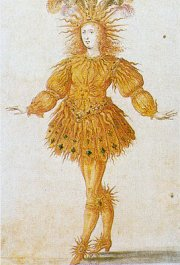
Král Slunce Ludvík XIV.
|
Čechy
|
Čechy
Klasicismus i osvícenství ovlivnily tvorbu první generace českých obrozenců na přelomu 18. a 19. století – Thám, Puchmajer, Dobner, Bolzano, Pelcl a Dobrovský. Vzniká Soukromá společnost nauk (1774), pozdější Královská česká společnost nauk (1790).
Další generace českých umělců a vědců má velmi blízko k preromantismu – Jungmann, Kollár, Čelakovský...
|
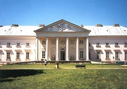
Klasicistní zámek Kačina
|
Internetové stránky
Klasicismus, empír
Klasicismus, reprodukce
Canova, sochy
Francouzská komedie, historie
Ludvík XIV., podobizny
Kačina, klasicistní zámek
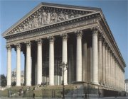
Kostel Madeleine v Paříži
|
Doporučená četba
Beaumarchais: Figarova svatba, přel. J.Hořejší, Praha 1951
Beaumarchais: Lazebník sevillský, přel. J.Hořejší, Praha 1951
Casanova, Giacomo: Historie mého života
Cyrano de Bergerac: Cesta na Měsíc, Cesta do Sluneční říše, Praha 1959
Dějiny Francie, Praha 1988
Haubelt, J.: České osvícenství, Praha 1986
Choderlos de Laclos: Nebezpečné známosti
Kniha o Cyranovi, Mladá fronta, Praha 1996
Kohl, F.: Benátčana J.Casanovy život a dílo, Praha 1911
Lely, Gilbert: Sade, přel. D.Steinová, Concordia, Praha 1994
Maurois, André: Dějiny Francie, Praha 1994
Pijoan, José: Dějiny umění, 8. díl
Polišenský, Josef: Casanova a jeho svět, Academia, Praha 1997
Rostand, Edmond: Cyrano z Bergeraku
Sade: Nehody Ctnosti, přel. A.Pech, Concordia, Praha 1990
Taine, H.: Francie před revolucí (2 svazky), Praha 1906
Thomas, Donald: Markýz de Sade, přel. J.Dungel, Jota, Brno 1997
Tichý, Vítězslav: Casanova v Čechách
Yates, Frances A.: Rezenkruciánské osvícenství, přel. M.Konvička, Pragma, Praha 2000
|
Připrav si referát o některé z uvedených knih nebo internetových stránek.
Exkurze
Versailles, interaktivní plán
Filmy
Valmont, režie M.Forman
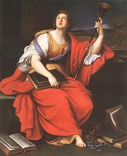
Mignard: Clio
|
|